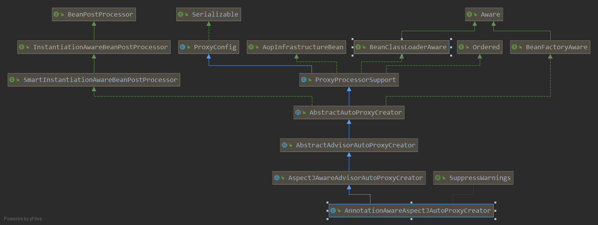
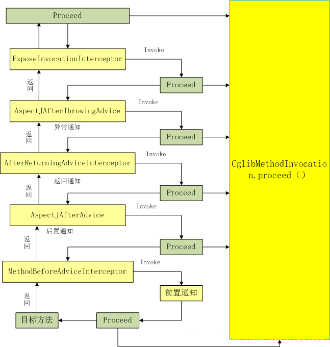

注解式 AOP 原理¶
基于注解的方式实现 AOP 需要在配置类中添加注解@EnableAspectJAutoProxy。我们就先从这个注解看一下 Spring 实现 AOP 的过程：
@SpringBootApplication
@EnableAspectJAutoProxy(proxyTargetClass = true, exposeProxy = true)
public class TestApplication {
public static void main(String[] args) {
}
}
@Target(ElementType.TYPE)
@Retention(RetentionPolicy.RUNTIME)
@Documented
@Import(AspectJAutoProxyRegistrar.class)//引入AspectJAutoProxyRegister.class对象
public @interface EnableAspectJAutoProxy {
//true——使用CGLIB基于类创建代理；false——使用java接口创建代理
boolean proxyTargetClass() default false;
//是否通过aop框架暴露该代理对象，aopContext能够访问.
boolean exposeProxy() default false;
}
可以看出@EnableAspectJAutoProxy 引入了 AspectJAutoProxyRegister.class 对象 ，AspectJAutoProxyRegister 给容器中注册一个 AnnotationAwareAspectJAutoProxyCreator
class AspectJAutoProxyRegistrar implements ImportBeanDefinitionRegistrar {
/**
* Register, escalate, and configure the AspectJ auto proxy creator based on the value
* of the @{@link EnableAspectJAutoProxy#proxyTargetClass()} attribute on the importing
* {@code @Configuration} class.
*/
@Override
public void registerBeanDefinitions(
AnnotationMetadata importingClassMetadata, BeanDefinitionRegistry registry) {
AopConfigUtils.registerAspectJAnnotationAutoProxyCreatorIfNecessary(registry);
AnnotationAttributes enableAspectJAutoProxy =
AnnotationConfigUtils.attributesFor(importingClassMetadata, EnableAspectJAutoProxy.class);
if (enableAspectJAutoProxy != null) {
if (enableAspectJAutoProxy.getBoolean("proxyTargetClass")) {
AopConfigUtils.forceAutoProxyCreatorToUseClassProxying(registry);
}
if (enableAspectJAutoProxy.getBoolean("exposeProxy")) {
AopConfigUtils.forceAutoProxyCreatorToExposeProxy(registry);
}
}
}
}
AopConfigUtils：
@Nullable
public static BeanDefinition registerAspectJAnnotationAutoProxyCreatorIfNecessary(BeanDefinitionRegistry registry) {
return registerAspectJAnnotationAutoProxyCreatorIfNecessary(registry, null);
}
@Nullable
public static BeanDefinition registerAspectJAnnotationAutoProxyCreatorIfNecessary(
BeanDefinitionRegistry registry, @Nullable Object source) {
//给容器中注册一个AnnotationAwareAspectJAutoProxyCreator
return registerOrEscalateApcAsRequired(AnnotationAwareAspectJAutoProxyCreator.class, registry, source);
}
@Nullable
private static BeanDefinition registerOrEscalateApcAsRequired(
Class<?> cls, BeanDefinitionRegistry registry, @Nullable Object source) {
Assert.notNull(registry, "BeanDefinitionRegistry must not be null");
if (registry.containsBeanDefinition(AUTO_PROXY_CREATOR_BEAN_NAME)) {
BeanDefinition apcDefinition = registry.getBeanDefinition(AUTO_PROXY_CREATOR_BEAN_NAME);
if (!cls.getName().equals(apcDefinition.getBeanClassName())) {
int currentPriority = findPriorityForClass(apcDefinition.getBeanClassName());
int requiredPriority = findPriorityForClass(cls);
if (currentPriority < requiredPriority) {
apcDefinition.setBeanClassName(cls.getName());
}
}
return null;
}
//注册AnnotationAwareAspectJAutoProxyCreator，cls = AnnotationAwareAspectJAutoProxyCreator
RootBeanDefinition beanDefinition = new RootBeanDefinition(cls);
beanDefinition.setSource(source);
beanDefinition.getPropertyValues().add("order", Ordered.HIGHEST_PRECEDENCE);
beanDefinition.setRole(BeanDefinition.ROLE_INFRASTRUCTURE);
//将beanDefinition注册进registry中,注册名为 AUTO_PROXY_CREATOR_BEAN_NAME
//AUTO_PROXY_CREATOR_BEAN_NAME = internalAutoProxyCreato
registry.registerBeanDefinition(AUTO_PROXY_CREATOR_BEAN_NAME, beanDefinition);
return beanDefinition;
}
AnnotationAwareAspectJAutoProxyCreator 的层次结构：

这里主要关注后置处理器和自动装备 BeanFactory 相关的方法：SmartInstantiationAwareBeanPostProcessor(后置处理器), BeanFactoryAware(自动装配 BeanFactory)
AnnotationAwareAspectJAutoProxyCreator 的注册流程¶
一切回归到 refresh()方法
public void refresh() throws BeansException, IllegalStateException {
synchronized (this.startupShutdownMonitor) {
// Prepare this context for refreshing.
prepareRefresh();
// Tell the subclass to refresh the internal bean factory.
ConfigurableListableBeanFactory beanFactory = obtainFreshBeanFactory();
// Prepare the bean factory for use in this context.
prepareBeanFactory(beanFactory);
try {
// Allows post-processing of the bean factory in context subclasses.
postProcessBeanFactory(beanFactory);
// Invoke factory processors registered as beans in the context.
invokeBeanFactoryPostProcessors(beanFactory);
// 注册后置处理器，用于拦截bean的创建
registerBeanPostProcessors(beanFactory);
// Initialize message source for this context.
initMessageSource();
// Initialize event multicaster for this context.
initApplicationEventMulticaster();
// Initialize other special beans in specific context subclasses.
onRefresh();
// Check for listener beans and register them.
registerListeners();
// Instantiate all remaining (non-lazy-init) singletons.
finishBeanFactoryInitialization(beanFactory);
// Last step: publish corresponding event.
finishRefresh();
}
catch (BeansException ex) {
if (logger.isWarnEnabled()) {
logger.warn("Exception encountered during context initialization - " +
"cancelling refresh attempt: " + ex);
}
// Destroy already created singletons to avoid dangling resources.
destroyBeans();
// Reset 'active' flag.
cancelRefresh(ex);
// Propagate exception to caller.
throw ex;
}
finally {
// Reset common introspection caches in Spring's core, since we
// might not ever need metadata for singleton beans anymore...
resetCommonCaches();
}
}
}
refresh()方法调用了一个方法 registerBeanPostProcessors(beanFactory)，注册后置处理器，用于拦截 bean 的创建。 也是在这个方法中完成了 AnnotationAwareAspectJAutoProxyCreator 的注册。 该方法的主要逻辑在 PostProcessorRegistrationDelegate 类中的 registerBeanPostProcessors 方法中：
public static void registerBeanPostProcessors(
ConfigurableListableBeanFactory beanFactory, AbstractApplicationContext applicationContext) {
//获取ioc容器已经定义了的需要创建对象的所有BeanPostProcessor
String[] postProcessorNames = beanFactory.getBeanNamesForType(BeanPostProcessor.class, true, false);
// 注册BeanPostProcessorChecker,当bean在BeanPostProcessor实例化过程中被创建时
//即当一个bean没有资格被所有BeanPostProcessor处理时，它记录一条信息消息。
int beanProcessorTargetCount = beanFactory.getBeanPostProcessorCount() + 1 + postProcessorNames.length;
beanFactory.addBeanPostProcessor(new BeanPostProcessorChecker(beanFactory, beanProcessorTargetCount));
// BeanPostProcessors 根据优先级进行分离，实现PriorityOrdered接口、实现Ordered接口、未实现优先级接口
List<BeanPostProcessor> priorityOrderedPostProcessors = new ArrayList<BeanPostProcessor>();
List<BeanPostProcessor> internalPostProcessors = new ArrayList<BeanPostProcessor>();
List<String> orderedPostProcessorNames = new ArrayList<String>();
List<String> nonOrderedPostProcessorNames = new ArrayList<String>();
for (String ppName : postProcessorNames) {
if (beanFactory.isTypeMatch(ppName, PriorityOrdered.class)) {
BeanPostProcessor pp = beanFactory.getBean(ppName, BeanPostProcessor.class);
priorityOrderedPostProcessors.add(pp);
if (pp instanceof MergedBeanDefinitionPostProcessor) {
internalPostProcessors.add(pp);//内部beanpostprocessor
}
}
else if (beanFactory.isTypeMatch(ppName, Ordered.class)) {
orderedPostProcessorNames.add(ppName);
}
else {
nonOrderedPostProcessorNames.add(ppName);
}
}
//先注册实现PriorityOrdered接口的 BeanPostProcessors
sortPostProcessors(priorityOrderedPostProcessors, beanFactory);
registerBeanPostProcessors(beanFactory, priorityOrderedPostProcessors);
//再注册实现Ordered接口的 BeanPostProcessors
List<BeanPostProcessor> orderedPostProcessors = new ArrayList<BeanPostProcessor>();
for (String ppName : orderedPostProcessorNames) {
BeanPostProcessor pp = beanFactory.getBean(ppName, BeanPostProcessor.class);
orderedPostProcessors.add(pp);
if (pp instanceof MergedBeanDefinitionPostProcessor) {
internalPostProcessors.add(pp);
}
}
sortPostProcessors(orderedPostProcessors, beanFactory); //按照优先级排序
registerBeanPostProcessors(beanFactory, orderedPostProcessors); //注册
//这里注册所有常规的beanpostprocessor
List<BeanPostProcessor> nonOrderedPostProcessors = new ArrayList<BeanPostProcessor>();
for (String ppName : nonOrderedPostProcessorNames) {
BeanPostProcessor pp = beanFactory.getBean(ppName, BeanPostProcessor.class);
nonOrderedPostProcessors.add(pp);
if (pp instanceof MergedBeanDefinitionPostProcessor) {
internalPostProcessors.add(pp);
}
}
registerBeanPostProcessors(beanFactory, nonOrderedPostProcessors);
// 最后，重新注册所有内部beanpostprocessor。
sortPostProcessors(internalPostProcessors, beanFactory);
registerBeanPostProcessors(beanFactory, internalPostProcessors);
// Re-register post-processor for detecting inner beans as ApplicationListeners,
// moving it to the end of the processor chain (for picking up proxies etc).
beanFactory.addBeanPostProcessor(new ApplicationListenerDetector(applicationContext));
}
registerBeanPostProcessors 中注册 BeanPostProcessor 的顺序是：
- 注册实现了 PriorityOrdered 接口的 BeanPostProcessor
- 注册实现了 Ordered 接口的 BeanPostProcessor
- 注册常规的 BeanPostProcessor ，也就是没有实现优先级接口的 BeanPostProcessor
- 注册 Spring 内部 BeanPostProcessor
registerBeanPostProcessors 方法中注册了所有的 BeanPostProcessor，所以 AnnotationAwareAspectJAutoProxyCreator 也在这里注册完成。 而从 AnnotationAwareAspectJAutoProxyCreator 类的层次接口可以看出，该类实现了 Ordered 接口。 所以它是在注册实现 Ordered 接口的 BeanPostProcessor 是完成注册：
BeanPostProcessor pp = beanFactory.getBean(ppName, BeanPostProcessor.class)；
这里调用的是 AbstractBeanFactory 的 getBean 方法，但是它实际的业务逻辑在 AbstractAutowireCapableBeanFactory 的 doGetBean 方法中实现：
protected Object doCreateBean(final String beanName, final RootBeanDefinition mbd, final Object[] args)
throws BeanCreationException {
//实例化bean.
BeanWrapper instanceWrapper = null;
if (mbd.isSingleton()) {
instanceWrapper = this.factoryBeanInstanceCache.remove(beanName);
}
if (instanceWrapper == null) {
instanceWrapper = createBeanInstance(beanName, mbd, args); //创建bean实例
}
final Object bean = (instanceWrapper != null ? instanceWrapper.getWrappedInstance() : null);
Class<?> beanType = (instanceWrapper != null ? instanceWrapper.getWrappedClass() : null);
mbd.resolvedTargetType = beanType;
// 允许post-processors修改合并的bean定义。
synchronized (mbd.postProcessingLock) {
if (!mbd.postProcessed) {
try {
applyMergedBeanDefinitionPostProcessors(mbd, beanType, beanName);
}
catch (Throwable ex) {
throw new BeanCreationException(mbd.getResourceDescription(), beanName,
"Post-processing of merged bean definition failed", ex);
}
mbd.postProcessed = true;
}
}
// Eagerly cache singletons to be able to resolve circular references
// even when triggered by lifecycle interfaces like BeanFactoryAware.
boolean earlySingletonExposure = (mbd.isSingleton() && this.allowCircularReferences &&
isSingletonCurrentlyInCreation(beanName));
if (earlySingletonExposure) {
if (logger.isDebugEnabled()) {
logger.debug("Eagerly caching bean '" + beanName +
"' to allow for resolving potential circular references");
}
addSingletonFactory(beanName, new ObjectFactory<Object>() {
@Override
public Object getObject() throws BeansException {
return getEarlyBeanReference(beanName, mbd, bean);
}
});
}
//初始化bean实例
Object exposedObject = bean;
try {
populateBean(beanName, mbd, instanceWrapper); //给bean的各种属性赋值
if (exposedObject != null) {
//初始化bean
exposedObject = initializeBean(beanName, exposedObject, mbd);
}
}
catch (Throwable ex) {
if (ex instanceof BeanCreationException && beanName.equals(((BeanCreationException) ex).getBeanName())) {
throw (BeanCreationException) ex;
}
else {
throw new BeanCreationException(
mbd.getResourceDescription(), beanName, "Initialization of bean failed", ex);
}
}
if (earlySingletonExposure) {
Object earlySingletonReference = getSingleton(beanName, false);
if (earlySingletonReference != null) {
if (exposedObject == bean) {
exposedObject = earlySingletonReference;
}
else if (!this.allowRawInjectionDespiteWrapping && hasDependentBean(beanName)) {
String[] dependentBeans = getDependentBeans(beanName);
Set<String> actualDependentBeans = new LinkedHashSet<String>(dependentBeans.length);
for (String dependentBean : dependentBeans) {
if (!removeSingletonIfCreatedForTypeCheckOnly(dependentBean)) {
actualDependentBeans.add(dependentBean);
}
}
if (!actualDependentBeans.isEmpty()) {
throw new BeanCurrentlyInCreationException(beanName,
"Bean with name '" + beanName + "' has been injected into other beans [" +
StringUtils.collectionToCommaDelimitedString(actualDependentBeans) +
"] in its raw version as part of a circular reference, but has eventually been " +
"wrapped. This means that said other beans do not use the final version of the " +
"bean. This is often the result of over-eager type matching - consider using " +
"'getBeanNamesOfType' with the 'allowEagerInit' flag turned off, for example.");
}
}
}
}
// Register bean as disposable.
try {
registerDisposableBeanIfNecessary(beanName, bean, mbd);
}
catch (BeanDefinitionValidationException ex) {
throw new BeanCreationException(
mbd.getResourceDescription(), beanName, "Invalid destruction signature", ex);
}
return exposedObject;
}
doGetBean 中的逻辑看上去很复杂，但实际上他只做了三件事：
- 创建 bean ：createBeanInstance(beanName, mbd, args)
- 给 bean 中的属性赋值：populateBean(beanName, mbd, instanceWrapper)
- 初始化 bean：initializeBean(beanName, exposedObject, mbd)
初始化 bean 时，initializeBean 方法会调用 BeanPostProcessor 和 BeanFactory 以及 Aware 接口的相关方法。 这也是 BeanPostProcessor 如何发挥初始化 bean 的原理。
AbstractAutowireCapableBeanFactory 的 initializeBean 方法：
protected Object initializeBean(final String beanName, final Object bean, RootBeanDefinition mbd) {
if (System.getSecurityManager() != null) {
AccessController.doPrivileged(new PrivilegedAction<Object>() {
@Override
public Object run() {
invokeAwareMethods(beanName, bean);
return null;
}
}, getAccessControlContext());
}
else {
invokeAwareMethods(beanName, bean); //处理Aware接口的方法回调
}
Object wrappedBean = bean;
if (mbd == null || !mbd.isSynthetic()) {
// 应用后置处理器的postProcessBeforeInitialization方法
wrappedBean = applyBeanPostProcessorsBeforeInitialization(wrappedBean, beanName);
}
try {
invokeInitMethods(beanName, wrappedBean, mbd); //执行自定义的初始化方法
}
catch (Throwable ex) {
throw new BeanCreationException(
(mbd != null ? mbd.getResourceDescription() : null),
beanName, "Invocation of init method failed", ex);
}
if (mbd == null || !mbd.isSynthetic()) {
// 执行后置处理器的postProcessAfterInitialization方法
wrappedBean = applyBeanPostProcessorsAfterInitialization(wrappedBean, beanName);
}
return wrappedBean;
}
可以看出 initializeBean 方法主要做了四件事：
- 处理 Aware 接口的方法回调：invokeAwareMethods(beanName, bean);
- 应用后置处理器的 postProcessBeforeInitialization 方法： wrappedBean=applyBeanPostProcessorsBeforeInitialization(wrappedBean, beanName);
- 执行自定义的初始化方法：invokeInitMethods(beanName, wrappedBean, mbd);
- 执行后置处理器的 postProcessAfterInitialization 方法：
wrappedBean=applyBeanPostProcessorsAfterInitialization(wrappedBean, beanName);
initializeBean 方法执行成功，AnnotationAwareAspectJAutoProxyCreator 注册和初始化成功。
这时再回到第 3 步中，BeanPostProcessor pp = beanFactory.getBean(ppName, BeanPostProcessor.class)执行成功，目标 bean 成功注册后，将注册完成的 beanPostProcessor，排序后注册到 BeanFactory 中
sortPostProcessors(orderedPostProcessors, beanFactory); //按照优先级排序
registerBeanPostProcessors(beanFactory, orderedPostProcessors); //注册
private static void registerBeanPostProcessors(
ConfigurableListableBeanFactory beanFactory, List<BeanPostProcessor> postProcessors) {
for (BeanPostProcessor postProcessor : postProcessors) {
beanFactory.addBeanPostProcessor(postProcessor);
}
}
AnnotationAwareAspectJAutoProxyCreator 调用时机：¶
refresh()方法中，调用 registerBeanPostProcessors(beanFactory)方法，注册完 BeanPostProcessor 后，还调用了方法 finishBeanFactoryInitialization(beanFactory) ，完成 BeanFactory 初始化工作，并创建剩下的单实例 bean。finishBeanFactoryInitialization(beanFactory)的执行过程：
preInstantiateSingletons 调用 getBean 方法，获取 bean 实例，执行过程 getBean->doGetBean()->getSingleton()->createBean()
这里要说一下 createBean 中的 resolveBeforeInstantiation(beanName, mbdToUse)方法： 让 beanpostprocessor 有机会返回代理而不是目标 bean 实例
try {
// 让beanpostprocessor有机会返回代理而不是目标bean实例。
Object bean = resolveBeforeInstantiation(beanName, mbdToUse);
if (bean != null) {
return bean;
}
}
protected Object resolveBeforeInstantiation(String beanName, RootBeanDefinition mbd) {
Object bean = null;
if (!Boolean.FALSE.equals(mbd.beforeInstantiationResolved)) {
// 确保此时bean类已经被解析。
if (!mbd.isSynthetic() && hasInstantiationAwareBeanPostProcessors()) {
Class<?> targetType = determineTargetType(beanName, mbd);
if (targetType != null) {
//拿到所有后置处理器，如果是InstantiationAwareBeanPostProcessor，就执行postProcessBeforeInstantiation
bean = applyBeanPostProcessorsBeforeInstantiation(targetType, beanName);
if (bean != null) {
bean = applyBeanPostProcessorsAfterInitialization(bean, beanName);
}
}
}
mbd.beforeInstantiationResolved = (bean != null);
}
return bean;
}
主要看一下 resolveBeforeInstantiation 方法中的 applyBeanPostProcessorsBeforeInstantiation 和 applyBeanPostProcessorsAfterInitialization 方法，注意两个方法的后缀不同 Instantiation(实例化) 和 Initialization(初始化)
protected Object applyBeanPostProcessorsBeforeInstantiation(Class<?> beanClass, String beanName) {
for (BeanPostProcessor bp : getBeanPostProcessors()) { //遍历所有BeanPostProcessor
if (bp instanceof InstantiationAwareBeanPostProcessor) { //如果是InstantiationAwareBeanPostProcessor类型
InstantiationAwareBeanPostProcessor ibp = (InstantiationAwareBeanPostProcessor) bp;
//执行postProcessBeforeInstantiation方法
Object result = ibp.postProcessBeforeInstantiation(beanClass, beanName);
if (result != null) {
return result;
}
}
}
return null;
}
postProcessBeforeInstantiation 方法是 InstantiationAwareBeanPostProcessor 接口中定义的方法，applyBeanPostProcessorsAfterInitialization 方法会调用 BeanPostProcessor 接口中 postProcessAfterInitialization 方法。 而且 InstantiationAwareBeanPostProcessor 是在创建 Bean 实例之前先尝试用后置处理器返回对象的；BeanPostProcessor 是在 Bean 对象创建完成初始化前后调用的。从 AnnotationAwareAspectJAutoProxyCreator 类的层次结构可以看出，该类实现了 InstantiationAwareBeanPostProcessor 接口，它会在所有 bean 实例创建前进行拦截，这也是 AOP 代理的关键所在。
Spring 创建 AOP 代理：¶
AnnotationAwareAspectJAutoProxyCreator 实现了 InstantiationAwareBeanPostProcessor 接口，所以每次创建 bean 实例前都会调用 AnnotationAwareAspectJAutoProxyCreator 类的 postProcessBeforeInstantiation()方法。下面就看一下该方法都做了什么。
postProcessBeforeInstantiation()是在 AbstractAutoProxyCreator 类中实现的：
public Object postProcessBeforeInstantiation(Class<?> beanClass, String beanName) throws BeansException {
Object cacheKey = getCacheKey(beanClass, beanName);
if (beanName == null || !this.targetSourcedBeans.contains(beanName)) {
//判断当前bean是否在advisedBeans中（advisedBeans保存了所有需要增强的bean）
if (this.advisedBeans.containsKey(cacheKey)) {
return null;
}
//判断当前bean是否基础类型Advice、Pointcut、Advisor、AopInfrastructureBean，或是否切面（@Aspect）
//是否需要跳过
if (isInfrastructureClass(beanClass) || shouldSkip(beanClass, beanName)) {
this.advisedBeans.put(cacheKey, Boolean.FALSE);
return null;
}
}
//如果我们有一个自定义TargetSource，请在这里创建代理。
if (beanName != null) {
TargetSource targetSource = getCustomTargetSource(beanClass, beanName);
if (targetSource != null) {
this.targetSourcedBeans.add(beanName);
Object[] specificInterceptors = getAdvicesAndAdvisorsForBean(beanClass, beanName, targetSource);
Object proxy = createProxy(beanClass, beanName, specificInterceptors, targetSource);
this.proxyTypes.put(cacheKey, proxy.getClass());
return proxy;
}
}
return null;
}
postProcessBeforeInstantiation 方法主要对当前类进行一些判断：
- 判断当前 bean 是否在 advisedBeans（增强 bean 的集合）中----增强 bean 是指切入点表达式包含的类。
- 判断当前 bean 是否是基础类型的 Advice、Pointcut、Advisor、AopInfrastructureBean，或者是否是切面（@Aspect）
- 是否需要跳过----获取候选的增强器（切面里面的通知方法）【List
candidateAdvisors】，如果增强器是 AspectJPointcutAdvisor 类型的，则返回 true（封装的通知方法的增强器是 InstantiationModelAwarePointcutAdvisor 类型）
判断完成后会创建切入点对象，也就是创建增强 bean，bean 创建完成后会调用 applyBeanPostProcessorsAfterInitialization 方法，继而调用后置处理器的 postProcessAfterInitialization 方法：
public Object applyBeanPostProcessorsAfterInitialization(Object existingBean, String beanName)
throws BeansException {
Object result = existingBean;
for (BeanPostProcessor beanProcessor : getBeanPostProcessors()) {
//调用后置处理器的postProcessAfterInitialization方法
result = beanProcessor.postProcessAfterInitialization(result, beanName);
if (result == null) {
return result;
}
}
return result;
}
@Override
public Object postProcessAfterInitialization(Object bean, String beanName) throws BeansException {
if (bean != null) {
Object cacheKey = getCacheKey(bean.getClass(), beanName);
if (!this.earlyProxyReferences.contains(cacheKey)) {
return wrapIfNecessary(bean, beanName, cacheKey);//包装如果需要的情况下
}
}
return bean;
}
postProcessAfterInitialization 主要有调用了 wrapIfNecessary(bean, beanName, cacheKey)方法：包装 bean，这里会获取 bean 的增强器，并且生成动态代理。下面看一下 wrapIfNecessary()方法：
protected Object wrapIfNecessary(Object bean, String beanName, Object cacheKey) {
if (beanName != null && this.targetSourcedBeans.contains(beanName)) {
return bean;
}
if (Boolean.FALSE.equals(this.advisedBeans.get(cacheKey))) {//不是增强类，则返回
return bean;
}
if (isInfrastructureClass(bean.getClass()) || shouldSkip(bean.getClass(), beanName)) {
this.advisedBeans.put(cacheKey, Boolean.FALSE);
return bean;
}
// 如果我们有建议，创建代理。
//获取当前bean的所有增强器
Object[] specificInterceptors = getAdvicesAndAdvisorsForBean(bean.getClass(), beanName, null);
if (specificInterceptors != DO_NOT_PROXY) {
this.advisedBeans.put(cacheKey, Boolean.TRUE); //将当前bean放入advisedBeans中
//创建增强bean的代理对象
Object proxy = createProxy(
bean.getClass(), beanName, specificInterceptors, new SingletonTargetSource(bean));
this.proxyTypes.put(cacheKey, proxy.getClass());
return proxy;
}
this.advisedBeans.put(cacheKey, Boolean.FALSE);
return bean;
}
wrapIfNecessary 方法中主要是获取当前 bean 的增强器调用 getAdvicesAndAdvisorsForBean 方法和创建增强后的 bean 的代理对象调用 createProxy 方法，下面看看这两个方法：
@Override
protected Object[] getAdvicesAndAdvisorsForBean(Class<?> beanClass, String beanName, TargetSource targetSource) {
List<Advisor> advisors = findEligibleAdvisors(beanClass, beanName); //获取bean可用的增强器
if (advisors.isEmpty()) {
return DO_NOT_PROXY;
}
return advisors.toArray();
}
protected List<Advisor> findEligibleAdvisors(Class<?> beanClass, String beanName) {
List<Advisor> candidateAdvisors = findCandidateAdvisors();//获取所有可用的增强器
//获取当前bean可用的增强器
List<Advisor> eligibleAdvisors = findAdvisorsThatCanApply(candidateAdvisors, beanClass, beanName);
extendAdvisors(eligibleAdvisors);
if (!eligibleAdvisors.isEmpty()) {
eligibleAdvisors = sortAdvisors(eligibleAdvisors); //对增强器进行排序
}
return eligibleAdvisors;
}
protected Object createProxy(
Class<?> beanClass, String beanName, Object[] specificInterceptors, TargetSource targetSource) {
if (this.beanFactory instanceof ConfigurableListableBeanFactory) {
AutoProxyUtils.exposeTargetClass((ConfigurableListableBeanFactory) this.beanFactory, beanName, beanClass);
}
ProxyFactory proxyFactory = new ProxyFactory();
proxyFactory.copyFrom(this);
if (!proxyFactory.isProxyTargetClass()) {
if (shouldProxyTargetClass(beanClass, beanName)) {
proxyFactory.setProxyTargetClass(true);
}
else {
evaluateProxyInterfaces(beanClass, proxyFactory);
}
}
//获取当前bean的所有增强器
Advisor[] advisors = buildAdvisors(beanName, specificInterceptors);
proxyFactory.addAdvisors(advisors);//将增强器保存在代理工程中
proxyFactory.setTargetSource(targetSource);
customizeProxyFactory(proxyFactory);
proxyFactory.setFrozen(this.freezeProxy);
if (advisorsPreFiltered()) {
proxyFactory.setPreFiltered(true);
}
return proxyFactory.getProxy(getProxyClassLoader()); //创建代理对象
}
Spring 是利用 ProxyFactory 代理工厂创建代理对象：
ProxyFactory 创建代理对象：
createAopProxy() 调用链路最终
*/
protected final synchronized AopProxy createAopProxy() {
if (!this.active) {
activate();
}
return getAopProxyFactory().createAopProxy(this);
}
public class ProxyCreatorSupport extends AdvisedSupport {
private AopProxyFactory aopProxyFactory;
private final List<AdvisedSupportListener> listeners = new LinkedList<>();
/** Set to true when the first AOP proxy has been created. */
private boolean active = false;
/**
* Create a new ProxyCreatorSupport instance.
*/
public ProxyCreatorSupport() {
this.aopProxyFactory = new DefaultAopProxyFactory();
}
可以看到返回的是一个 DefaultAopProxyFactory 对象，返回继续跟进 createAopProxy 的方法
public interface AopProxyFactory {
/**
* Create an {@link AopProxy} for the given AOP configuration.
* @param config the AOP configuration in the form of an
* AdvisedSupport object
* @return the corresponding AOP proxy
* @throws AopConfigException if the configuration is invalid
*/
AopProxy createAopProxy(AdvisedSupport config) throws AopConfigException;
}
到达 DefaultAopProxyFactory#createAopProxy 方法
@Override
public AopProxy createAopProxy(AdvisedSupport config) throws AopConfigException {
if (config.isOptimize() || config.isProxyTargetClass() || hasNoUserSuppliedProxyInterfaces(config)) {
Class<?> targetClass = config.getTargetClass();
if (targetClass == null) {
throw new AopConfigException("TargetSource cannot determine target class: " +
"Either an interface or a target is required for proxy creation.");
}
if (targetClass.isInterface() || Proxy.isProxyClass(targetClass)) {
return new JdkDynamicAopProxy(config);
}
return new ObjenesisCglibAopProxy(config);
}
else {
return new JdkDynamicAopProxy(config);
}
}

剩余内容请看AOP 的原理有详细讲解。